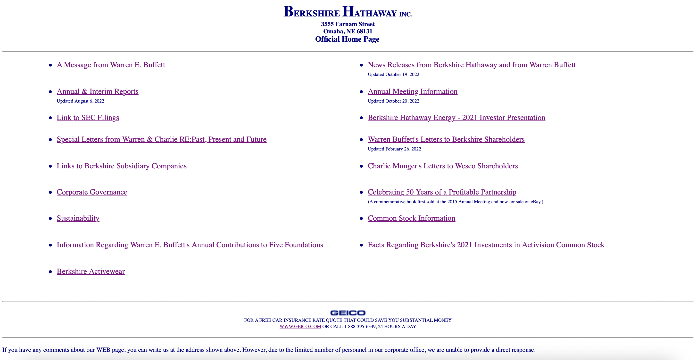
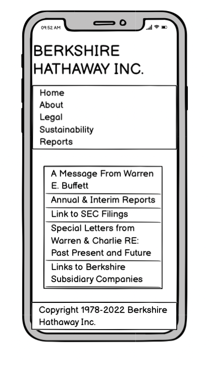
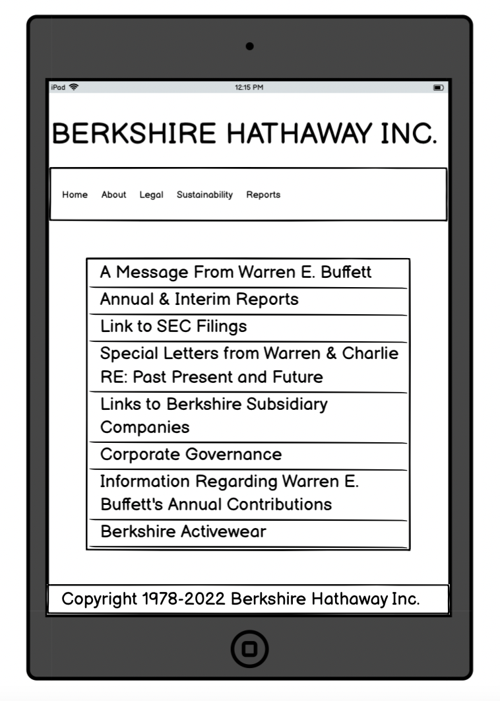
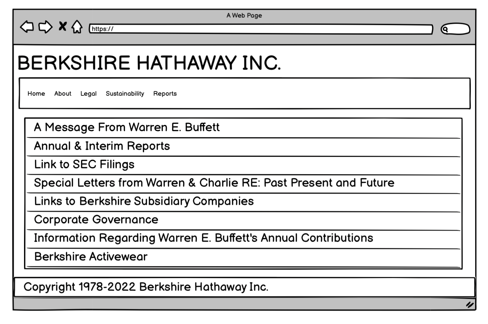
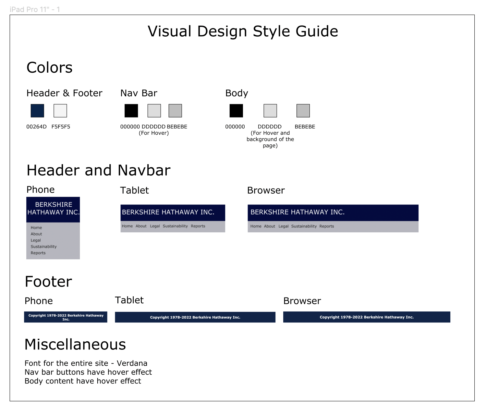

Picking a Web page:
For this assignemnt, I decided to work on BERKSHIRE HATHAWAY's website. It is one of the most poorly designed webistes according to a lot of website reviewers and hence I decided to take a shot at redesigning this website (hoping that Buffet buys it off from me!).
Click Here to visit the site

Finding Problems:
Some of the problems that I spotted keeping usability, learnability, and memorability in mind are as follows:
- This is a very basic website without any design elements. There is negligible use of CSS for designing and hence it is not visually appealing and engaging.
- There is no navigation bar and all the information seems to be thrown in the body and footer of the site.
- There is no clear structure to the website and everything on the home page seems scattered and unorganized, which may hinder all the important factors one has to keep in mind such as learnability, usability, memorability and accessibility.
- Important links such as Legal Disclaimer is pushed at the bottom of the site.
- Unnecessary information thrown on the website, incresing its complexity and reducing usability and learnability.
Accessibility:
WebAIM WAVE detected only one error for this page and that error suggests that the language of the document is not identified or a lang attribute value is invalid. I do not agree with this observation as the entire website is in English and readable.
Low-fidelity Wireframing: I used Balsamiq to create a total of 3 wireframes of the homepage of Berkshire Hathaway, one for each of the screen sizes - mobile, tablet, and desktop. The idea is to divide that site into 4 sections: header, navigation bar, body and footer. Header just contains the name and footer simply contains the copyright information and have no hyperlinks. Nav bar contains 5 buttons with each of them having the hover effect and are linked to their respective pages. Finally, the body is also a bunch of 16 buttons stacked vertically with each of them referencing to a link found in the original site. This also has the hover effect. The wireframes are as follows:
  
Visual Design Style Guide:

High-Fidelity Prototyping:
I used Figma to create a 3 high-fidelity prototypes of the homepage of Berkshire Hathaway, one for each of the screen sizes - mobile, tablet, and desktop. These prototypes are exactly how I want the redesigned versions to look. For the nav bar, I plan to use the @media Rule in CSS and set some max width which if met, it would stack all the button from a horizontal layout to a vertical one. So essentially it will look very similar to the layout observed in the body section of the page. This I plan to achieve setting display attribute to block. Hover effect is something that I plan to implement for both the nav bar buttons as well as the buttons in the body section. There is some amount of padding to be added in the body section to create a gap or distinction between the body and navbar section on the top and body and footer at the bottom.
The prototypes are as follows: